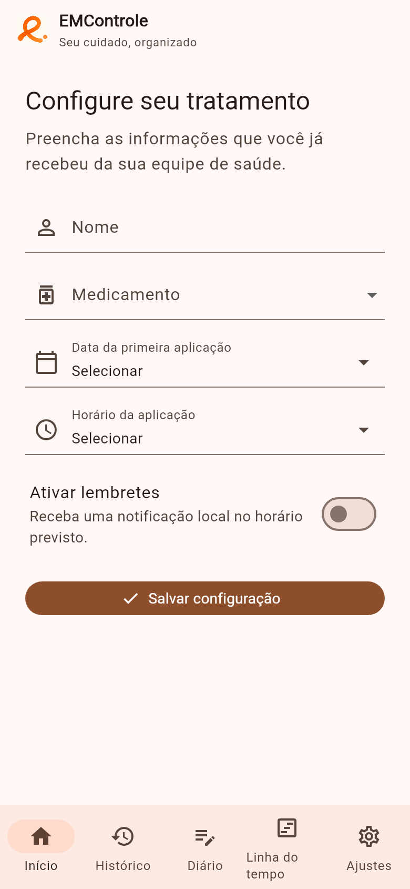
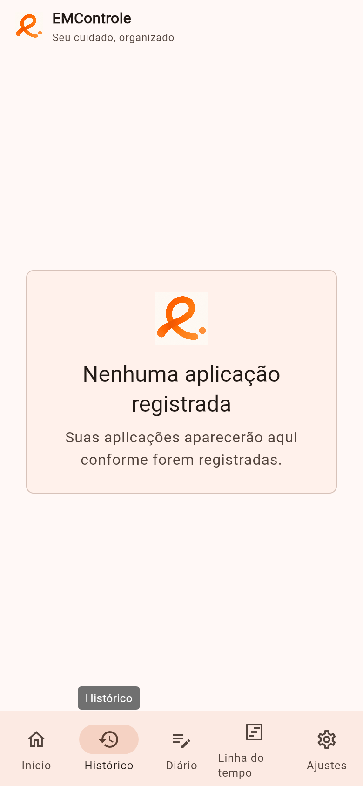
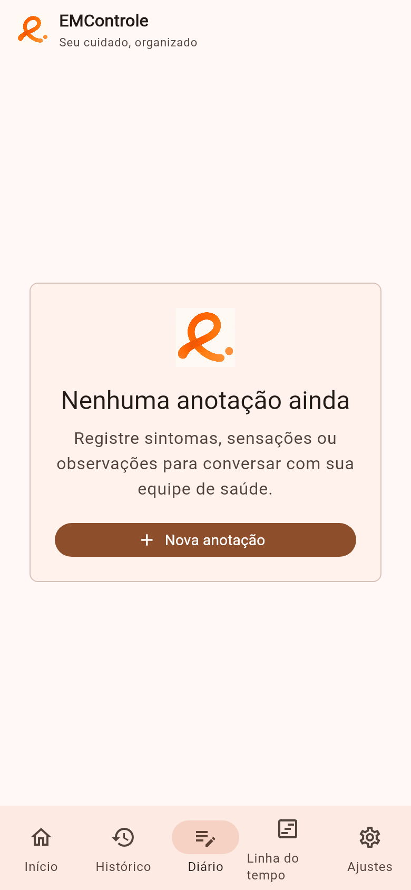
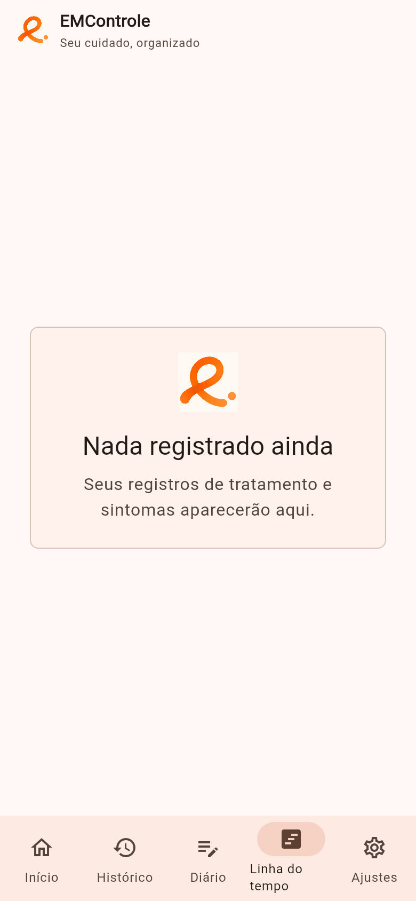
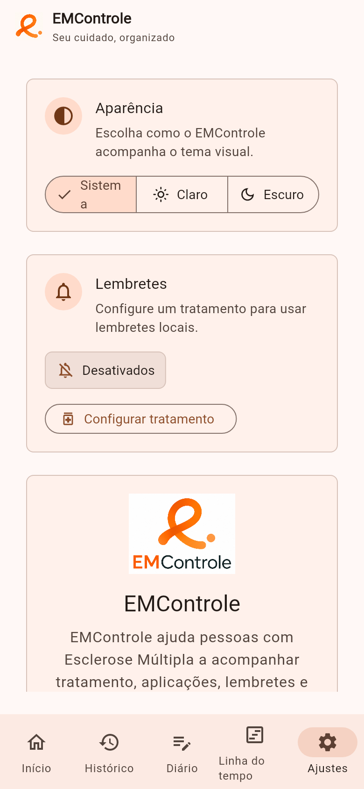

Tratamento e horários
Deixar a rotina visível ajuda a consultar datas e horários sem depender apenas da memória.
Rotina de cuidado com Esclerose Múltipla
Organize tratamento, lembretes, locais de aplicação, diário de sintomas e histórico em uma experiência simples, local-first e feita em português.
O EMControle não substitui a equipe de saúde. Ele ajuda a guardar e acompanhar informações que já foram combinadas com profissionais.
O problema
A Esclerose Múltipla pode envolver medicamentos com horários, frequências e formas de uso diferentes. Em alguns casos, também é preciso acompanhar locais de aplicação, sintomas e observações do dia a dia.
Na prática, essas informações podem acabar espalhadas entre papéis, alarmes, conversas de consulta e a própria memória.
O EMControle nasceu para diminuir esse esforço de organização, sem tentar decidir nada no lugar da pessoa ou da equipe de saúde.
Deixar a rotina visível ajuda a consultar datas e horários sem depender apenas da memória.
Quando o tratamento é injetável, ver os locais usados e os próximos locais ajuda a reduzir confusão.
Anotações simples ajudam a preservar detalhes para conversas futuras com profissionais de saúde.
A solução
O app ajuda a registrar, lembrar e revisar informações do tratamento. Ele não decide medicamentos, não interpreta sintomas e não recomenda condutas.
Cadastre medicamento, data inicial, horário e rotina conforme a orientação recebida.
Receba avisos no próprio dispositivo, sem conta obrigatória ou envio de dados para servidores.
Veja o próximo local sugerido e ilustrações dedicadas para tratamentos injetáveis suportados.
Registre aplicações ou usos realizados para revisar datas, horários e status depois.
Anote sintomas, humor, sono, dor, fadiga e observações de forma simples.
Veja aplicações, anotações e mudanças de tratamento em uma sequência fácil de revisar.
Privacidade
O EMControle funciona sem depender de conexão constante com a internet. Você não precisa criar conta, e suas informações ficam no seu dispositivo. A versão atual não envia dados para servidores nem registra como você usa o app.
Experiência
A interface prioriza leitura clara, botões fáceis de tocar, tema claro e escuro, e português como primeira língua.
Primeiro acesso com chamada clara para cadastrar o tratamento principal.

Configuração do medicamento, data, horário, lembretes e local inicial quando aplicável.

Registros de aplicações e usos organizados para consulta posterior.

Espaço para sintomas, humor, sono, dor, fadiga e observações pessoais.

Aplicações, diário e mudanças de tratamento em uma sequência única.

Preferências do app e acesso à edição do tratamento quando já configurado.
PWA
A versão web publicada tem suporte a Progressive Web App. Em navegadores compatíveis, o EMControle pode ser instalado na tela inicial e aberto como app, mantendo a proposta local-first.
A experiência web, o manifesto PWA e os atalhos instalados usam a nova identidade visual do EMControle.
A instalação não exige conta, autenticação, backend ou sincronização em nuvem.
As informações cadastradas ficam no dispositivo usado para acessar o app.
História
O EMControle nasceu como Trabalho de Conclusão de Curso de Felipe Bahiense Santos, com o objetivo de apoiar pessoas com Esclerose Múltipla no controle de medicamentos, horários, locais de aplicação, lembretes e registros do dia a dia.
O projeto original propunha um aplicativo Android para reunir medicamento, próximo local de aplicação, alertas, confirmação de aplicação e diário.
Depois do TCC, Felipe seguiu carreira como Engenheiro de Software e levou para a reconstrução do EMControle aprendizados de produto e experiência de uso.
A nova versão mantém a essência do projeto original e evolui a experiência com mais clareza, catálogo de medicamentos, rotação de locais, histórico, diário, linha do tempo e privacidade por padrão.
Código aberto
O EMControle é um projeto de código aberto licenciado sob MIT. Isso permite que outras pessoas leiam, estudem e acompanhem a evolução do aplicativo.
O repositório reúne o código da landing page, do aplicativo e dos materiais visuais do projeto.
FAQ
Não. O app não diagnostica, prescreve, recomenda dose nem sugere tratamento.
Não nesta versão. Suas informações ficam no seu dispositivo, sem conta obrigatória, envio para servidores ou acompanhamento de uso.
Não. Você pode usar o EMControle sem criar usuário ou senha.
Sim. A versão publicada para navegador está disponível pelo botão Experimentar agora.
Live App
O link publicado aponta para a versão web gerada a partir do estado atual do projeto. A experiência não exige login, não envia seus dados para servidores e não acompanha seu uso.
Identidade nova e CTA para acompanhamento.
Formulário atual de tratamento.